2. 準備¶
2.1. フォルダ構成¶
作業を進めるにあたり、皆さんのフォルダ構成を統一します。 全員のフォルダをそろえることにより、トラブルシューティングを容易にする目的があります。
以下の表に示したフォルダを作成してください。
| 作成するフォルダ | 説明 |
|---|---|
| C:\tool | 開発に必要となるアプリケーションを保存するフォルダです。「tool フォルダ」と呼びます。 |
| C:\works | 開発作業の成果物を保存するフォルダです。「works フォルダ」と呼びます。 |
2.2. Apache Maven のインストール¶
Apache Maven は Java プロジェクトのライフサイクルを管理するツールです。またライブラリの依存関係も解決してくれます。 ダウンロードページ から取得してください。
以下の図では、バージョン 3.3.9 を取得しています。
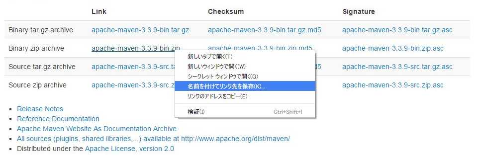{kind=link}
tool フォルダに、フォルダ名「maven」として解凍してください。
2.2.1. パスを設定する¶
コマンドラインから Maven を実行するためにパスを設定します。
エクスプローラを起動します。
左ペインから「コンピュータ」を右クリックし「プロパティ」を選択します。
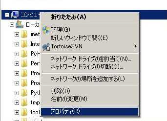左上にある「システムの詳細設定」を選択します。
システムのプロパティ ダイアログの「詳細設定」タブから「環境変数」ボタンを押下します。
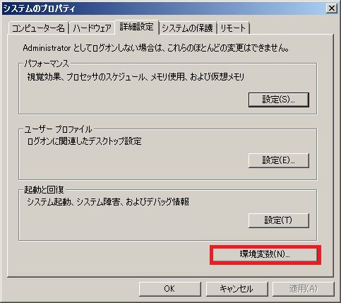「環境変数」ダイアログの「システム環境変数(S)」で「Path」を選択し、「編集」ボタンを押下します。
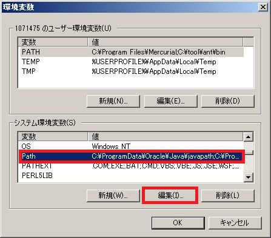- 表示される「システム変数の編集」ダイアログにおいて以下の表の文字列を追記します。最初にセミコロンが付いています。これは区切り文字なので忘れずに追加してください。
名前 追記する文字列 変数値(V) ;C:\tool\maven\bin 「OK」ボタンを押下して設定終了します。
「Windows キー ＋ R」を押下して「ファイル名を指定して実行」ダイアログを表示します。
「cmd」と入力して「OK」を押下します。
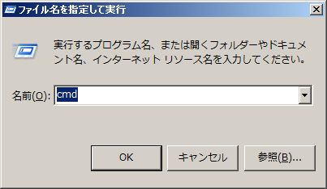- コマンドラインのウィンドウで以下を入力して Enter キーを押下します。mvn -version
Maven のバージョン情報が表示されることを確認します。下記に例を示します。
>mvn -version Apache Maven 3.3.9 (bb52d8502b132ec0a5a3f4c09453c07478323dc5; 2015-11-11T01:41:47+09:00) Maven home: C:\tool\maven\bin\.. Java version: 1.7.0_51, vendor: Oracle Corporation Java home: C:\Program Files\Java\jdk1.7.0_51\jre Default locale: ja_JP, platform encoding: MS932 OS name: "windows 7", version: "6.1", arch: "amd64", family: "windows"
{kind=link}
{kind=link}
{kind=link}
{kind=link}
2.3. Eclipse Pleiades のインストールと起動¶
Pleiades - Eclipse プラグイン日本語化プラグイン から Mars の 64bit Full Edition をダウンロードしてください。 ダウンロードが完了したら、tool フォルダに、フォルダ名「pleiades」で解凍してください。
C:\tool\pleiades\eclipse 内の eclipse.exe を起動します。
- 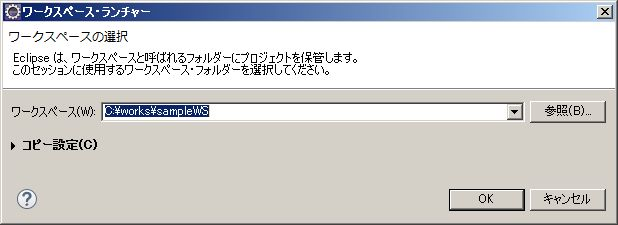「ワークスペース・ランチャー」で「ワークスペース(W)」に以下のパスを指定します。C:\works\sampleWS
「OK」ボタンを押下します。
Eclipse が起動します。
{kind=link}
Eclipse を起動したまま、プラグインのインストールを行います。
2.4. Eclipse プラグインのインストール¶
Eclipse を起動して、プラグインをインストールします。
メニューバーの「ヘルプ(H)」から「Eclipse マーケットプレース」を選択します。
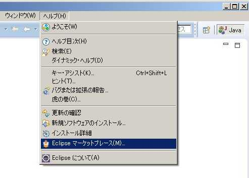「Eclipse マーケットプレース」画面の「検索(I):」に「jboss」と入力して「実行」ボタンを押下します。
- 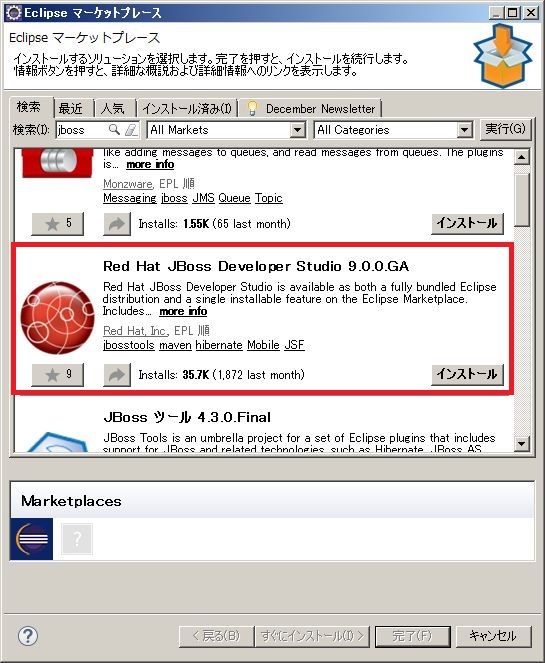「Red Hat JBoss Developer Studio 9.0.0.GA」をインストールしてください。インストールには右下の「インストール」ボタンを押下します。
「選択されたフィーチャーの確認」画面で「確認(C)>」ボタンを押下します。
「ライセンスのレビュー」画面で「使用条件の条項に同意します(A)」を選択し「完了(F)」ボタンを押下します。
インストールが開始されます。進捗は画面右下に表示されます。
途中で以下の「セキュリティ警告」ダイアログが表示されます、「OK」ボタンを押下します。
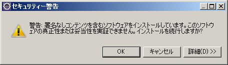「ソフトウェア更新」ダイアログが表示されます。「はい(Y)」ボタンを押下して Eclipse を再起動します。
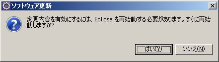再起動後、「JBoss Developer Studio Usage」ダイアログが表示されます。「はい(Y)」ボタンを押下します。
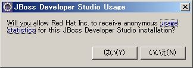
{kind=link}
{kind=link}
{kind=link}
{kind=link}
{kind=link}
以上で、プラグインのインストールは終了です。
2.5. PostgreSQL のインストール¶
フリーの RDBMS である PostgreSQL 9.4.5 をダウンロードしてください。
ダウンロードが完了したら、実行してウィザードに従ってインストールします。
ファイルをダブルクリックし、「Next>」を押下します。
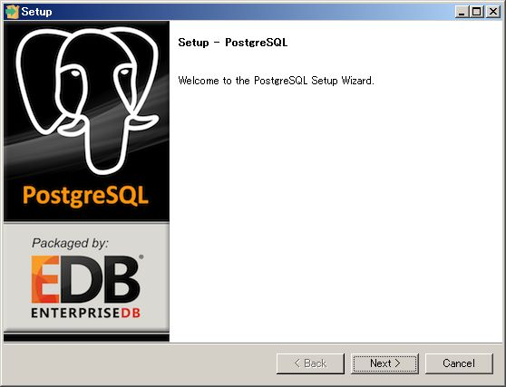「Installation Directory」画面が表示されます。変更せず「Next>」を押下します。
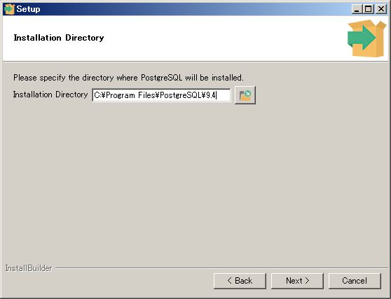「Data Directory」画面が表示されます。変更せず「Next>」を押下します。
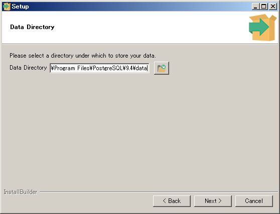「Password」画面が表示されます。「pass#1234」を登録してください。
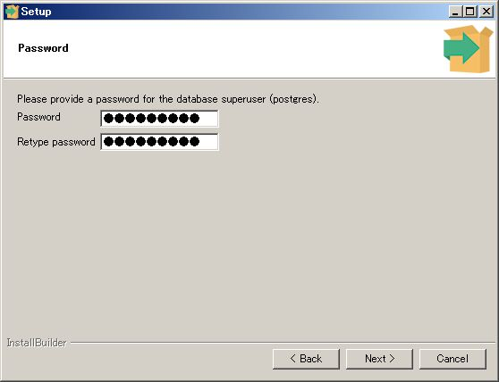「Port」画面が表示されます。変更せず「Next>」を押下します。
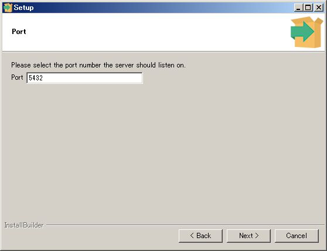「Port」画面が表示されます。変更せず「Next>」を押下します。
「Advanced Option」画面が表示されます。変更せず「Next>」を押下します。
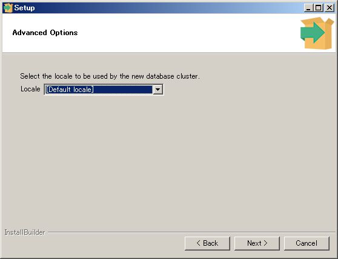「Ready To Install」画面が表示されます。「Next>」を押下します。
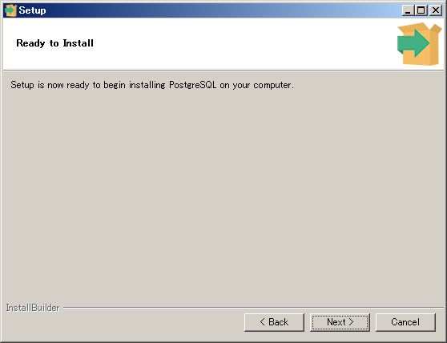インストールが開始されます。
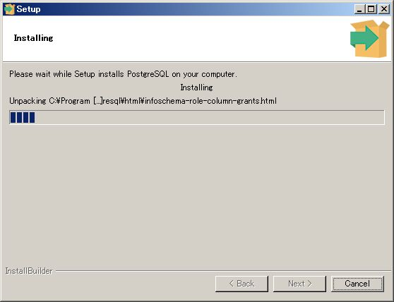インストールが完了したら、チェックボックスのチェックを外して「Finish」を押下します。
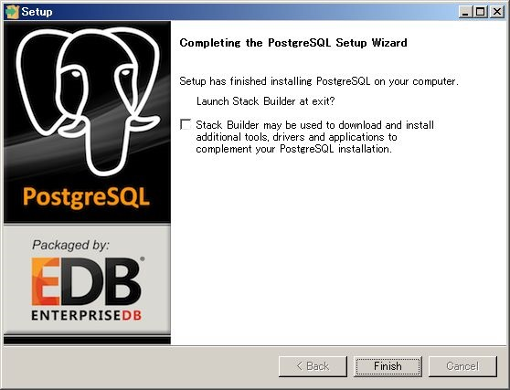
{kind=link}
{kind=link}
{kind=link}
{kind=link}
{kind=link}
{kind=link}
{kind=link}
{kind=link}
{kind=link}
2.5.1. JDBC ドライバのダウンロード¶
JDBC Driver ダウンロード URL から PostgreSQL の JDBC ドライバをダウンロードしてください。 ダウンロードしたファイルを tool フォルダに保存してください。
2.5.2. データベースの作成¶
“C:\Program Files\PostgreSQL\9.4\bin\pgAdmin3.exe” を実行します。
左ペインから「PostgreSQL 9.4」に接続します。パスワード入力を促されたらインストール時に設定したパスワードを入力します。
「データベース」を右クリックし「新規オブジェクト」「新しいデータベース...」を選択します。
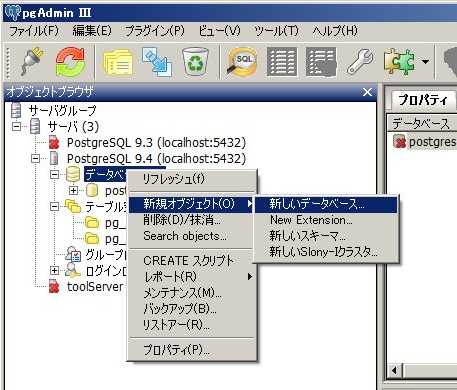「新しいデータベース」ウィンドウで「プロパティ」タブで「名前」に「shainweb」を指定して「OK」を押下します。
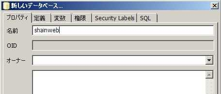F5 を押下して、左ペインで「shainweb」データベースが追加されていることを確認します。
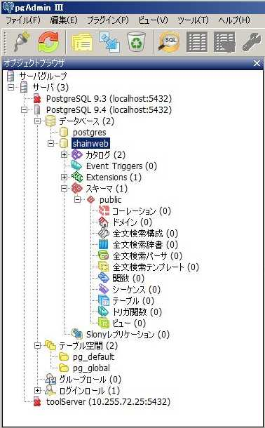
{kind=link}
{kind=link}
{kind=link}
pgAdmin を起動したまま、テーブルの作成を行います。
2.5.3. テーブルの作成¶
pgAdmin を起動して、テーブルの作成を行います。
メニューバーの「ツール(T)」を選択し「クエリツール」を選択します。
中央上部にある接続先が「shainweb の postgres@localhost:5432」であることを確認します。
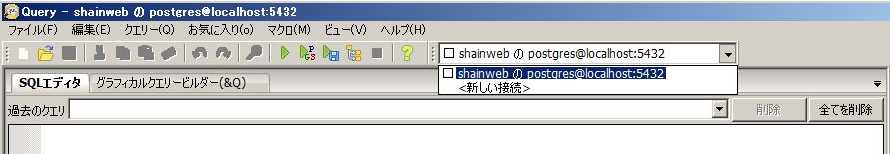「SQL エディタ」に下記のテーブル定義文を入力します。
メニューバーの「クエリー(Q)」を選択し「実行(E)」を選択します。
「出力ビュー」のメッセージでエラーがないことを確認し、クエリツールを終了します。
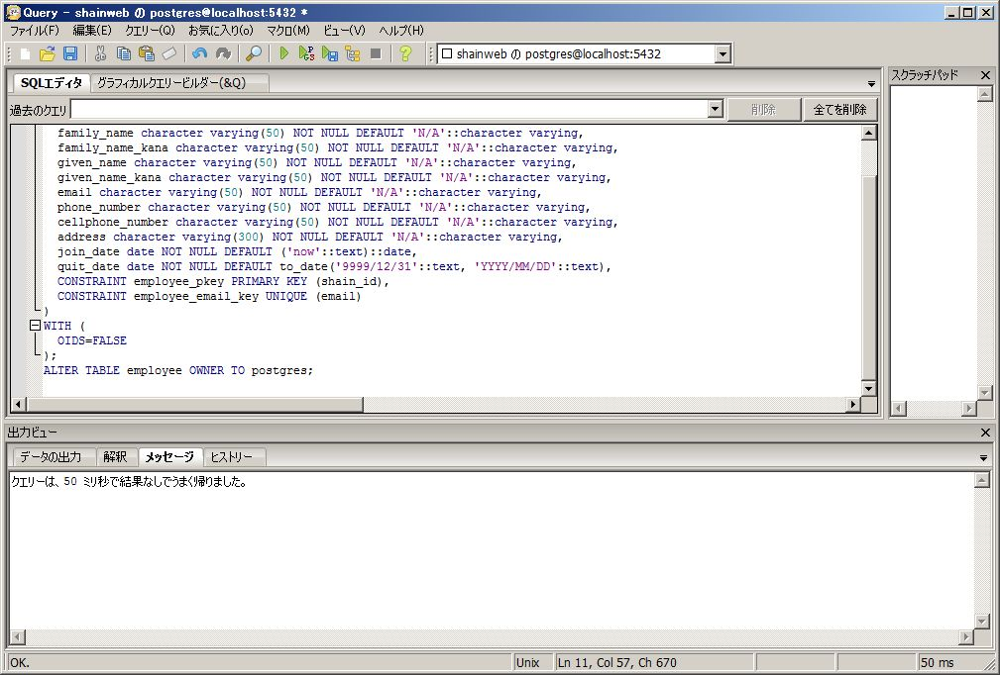pgAdmin で F5 を押下し左ペインで 3 テーブルが作成されていることを確認します。
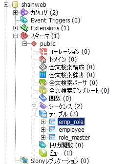
入力する SQL 文
-- ロールマスタテーブル --
CREATE TABLE role_master
(
role_id serial NOT NULL,
role_name character varying(50) NOT NULL DEFAULT 'N/A'::character varying,
CONSTRAINT role_master_pkey PRIMARY KEY (role_id),
CONSTRAINT role_master_role_name_key UNIQUE (role_name)
)
WITH (
OIDS=FALSE
);
ALTER TABLE role_master
OWNER TO postgres;
INSERT INTO role_master(role_name) VALUES('USER');
INSERT INTO role_master(role_name) VALUES('ADMIN');
COMMIT;
-- 社員テーブル --
CREATE TABLE employee
(
shain_id character varying(20) NOT NULL,
family_name character varying(50) NOT NULL DEFAULT 'N/A'::character varying,
family_name_kana character varying(50) NOT NULL DEFAULT 'N/A'::character varying,
given_name character varying(50) NOT NULL DEFAULT 'N/A'::character varying,
given_name_kana character varying(50) NOT NULL DEFAULT 'N/A'::character varying,
email character varying(50) NOT NULL DEFAULT 'N/A'::character varying,
phone_number character varying(50) NOT NULL DEFAULT 'N/A'::character varying,
cellphone_number character varying(50) NOT NULL DEFAULT 'N/A'::character varying,
address character varying(300) NOT NULL DEFAULT 'N/A'::character varying,
join_date date NOT NULL DEFAULT ('now'::text)::date,
quit_date date NOT NULL DEFAULT to_date('9999/12/31'::text, 'YYYY/MM/DD'::text),
password character varying (255) NOT NULL DEFAULT 'N/A'::character varying,
role_id integer NOT NULL DEFAULT 1,
delete_flag integer NOT NULL DEFAULT 0,
CONSTRAINT employee_pkey PRIMARY KEY (shain_id),
CONSTRAINT employee_email_key UNIQUE (email),
CONSTRAINT employee_chk_deleteflag CHECK (delete_flag = ANY (ARRAY[0, 1])),
CONSTRAINT employee_fk_roleid FOREIGN KEY (role_id) REFERENCES role_master(role_id) ON UPDATE CASCADE ON DELETE SET DEFAULT
)
WITH (
OIDS=FALSE
);
ALTER TABLE employee
OWNER TO postgres;
2.6. WildFly のインストール¶
Redhat が提供するフリーの Java EE アプリケーションサーバ WildFly 9.0.2 をダウンロードしてください。
ダウンロードが完了したら、tool フォルダに、フォルダ名「wildfly-9.0.2.Final」で解凍してください。以上でインストールは終了です。
2.6.1. 管理者ユーザの登録¶
アプリケーションサーバの管理者ユーザを登録します。
C:\tool\wildfly-9.0.2.Final\bin をエクスプローラで開きます。
- 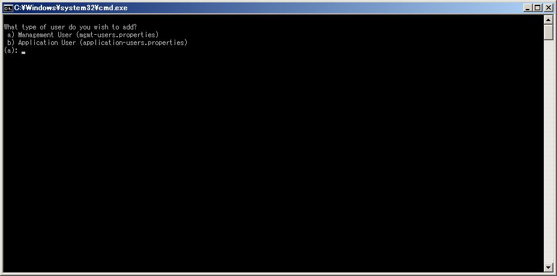add-user.bat をダブルクリックすると以下の画面が出力されます。セキュリティの警告ダイアログが表示される場合は、チェックを外して「実行」を押下します。以下のメッセージが表示されます。
何も入力せず Enter キーを押下します。
ユーザ名の入力を促されます。「admin」を入力して Enter キーを押下します。
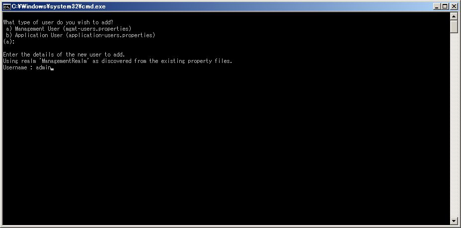本当に作成するか否かを聞かれるので「yes」を入力し Enter キーを押下します。
- 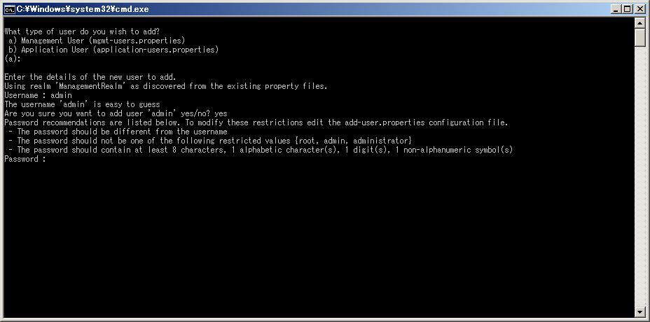設定するパスワードを聞かれるので「pass#1234」を入力し、Enter キーを押下します。「Re-enter Password」でパスワード確認されるので同じパスワードを入力し、Enter キーを押下します。
所属グループを設定します。何も入力せず Enter キーを押下します。
ユーザ追加確認メッセージが表示されます。「yes」を入力し Enter キーを押下します。
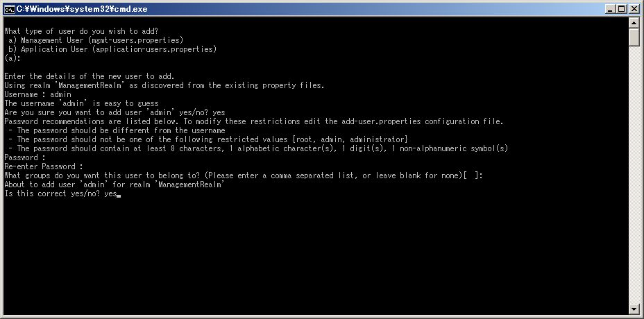ユーザ追加終了メッセージが出力され、他のアプリケーションサーバプロセスを呼び出すユーザか否かの確認メッセージが表示されます。
「no」を入力し Enter キーを押下します。
「続行するには何かキーを押してください」が表示されます。Enter キーを押下しコマンドを終了させます。
{kind=link}
{kind=link}
{kind=link}
{kind=link}
2.6.2. 管理コンソールの起動と確認¶
WildFly を起動して、PostgreSQL の JDBC ドライバを追加します。
C:\tool\wildfly-9.0.2.Final\bin をエクスプローラで開きます。
- standalone.bat をダブルクリックします。セキュリティの警告ダイアログが表示される場合は、チェックを外して「実行」を押下します。
コマンドラインのウィンドウが表示され起動が開始されます。5 秒ほど待って「WildFly Full 9.0.2.Final (WildFly Core 1.0.2.Final) started」のメッセージが出力されていることを確認します。
http://localhost:9990 をブラウザで開きます。
ユーザ名「admin」、パスワード「pass#1234」を入力してログインできることを確認します。
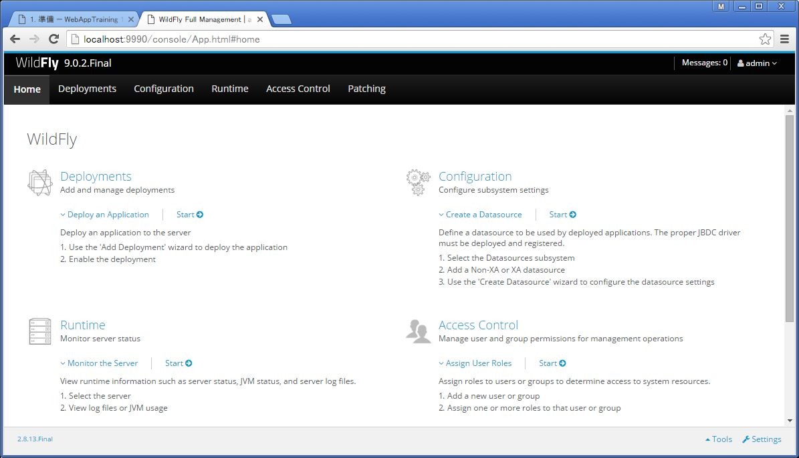
{kind=link}
WildFly を起動したまま、次の JDBC ドライバの追加を行ってください。
2.6.3. JDBC ドライバの追加¶
WildFly を起動して、PostgreSQL の JDBC ドライバを追加します。
C:\tool\wildfly-9.0.2.Final\bin をエクスプローラで開きます。
- jboss-cli.bat をダブルクリックします。セキュリティの警告ダイアログが表示される場合は、チェックを外して「実行」を押下します。
「connect」を入力し、Enter キーを押下します。
以下を入力し Enter キーを押下します。
module add --name=org.postgres --resources=C:\tool\postgresql-9.4-1206-jdbc41.jar --dependencies=javax.api,javax.transaction.api
以下を入力し Enter キーを押下します。
/subsystem=datasources/jdbc-driver=postgres:add(driver-name="postgres",driver-module-name="org.postgres",driver-class-name=org.postgresql.Driver)
{“outcome” => “success”} が表示されることを確認します。
「exit」を入力して Enter キーを押下します。
「続行するには何かキーを押してください」が表示されます。Enter キーを押下しコマンドを終了させます。
WildFly を起動したまま、次のデータソースの追加を行ってください。
2.6.4. データソースの追加¶
WildFly を起動して PostgreSQL 上に作成したデータベースに接続するための設定を行います。
管理コンソール をブラウザで開き、右上部の「Configuration」のリンクをクリックします。
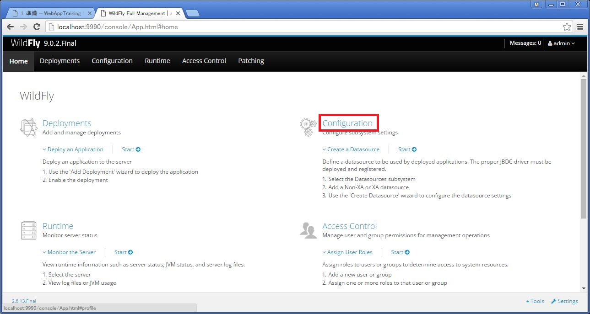「Subsystem」->「DataSources」->「Non-XA」を開き、「Add」ボタンを押下します。
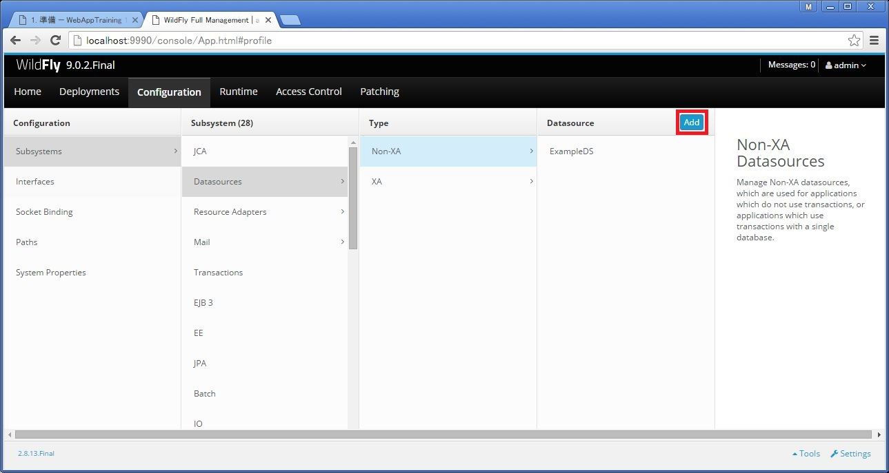「Create Datasource」で「PostgreSQL Datasource」を選択し、「Next>>」をクリックします。
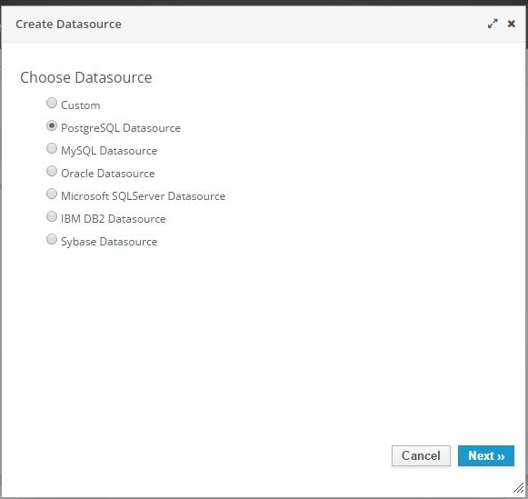「Step 1/3: Datasource Attributes」で「Name:」と「JNDI Name:」を次のように指定し、「Next>>」をクリックします。
名前 設定文字列 Name: ShainwebDS JNDI Name: java:jboss/datasources/ShainwebDS 「Step 2/3: JDBC Driver」で「Detected Driver」タブで「postgres」を選択し、「Next>>」をクリックします。
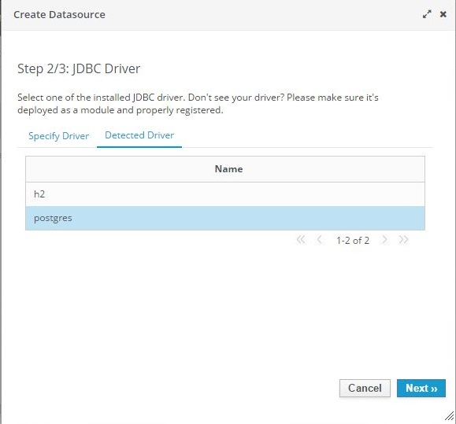「Step 3/3: Connection Settings」で以下のように指定します。
名前 設定文字列 Connection URL: jdbc:postgresql://localhost:5432/shainweb Username: postgres Password: PostgreSQL インストール時に設定したパスワード Security Domain: (空欄) 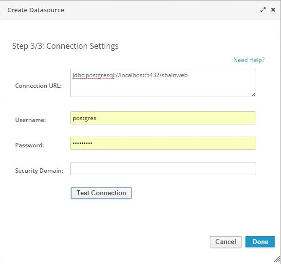「Test Connection」をクリックして、接続が成功することを確認します。
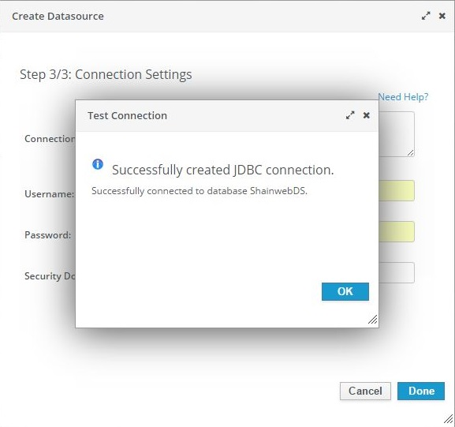「Done」をクリックして追加されたことを確認します。
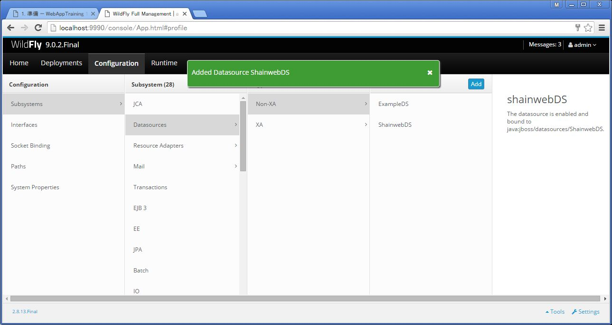
{kind=link}
{kind=link}
{kind=link}
{kind=link}
{kind=link}
{kind=link}
{kind=link}
2.7. Eclipse 上での WildFly サーバ登録¶
Eclipse から WildFly を起動するために登録を行います。
C:\tool\pleiades\eclipse 内の eclipse.exe を起動します。
下のタブにある「サーバー」を選択します。
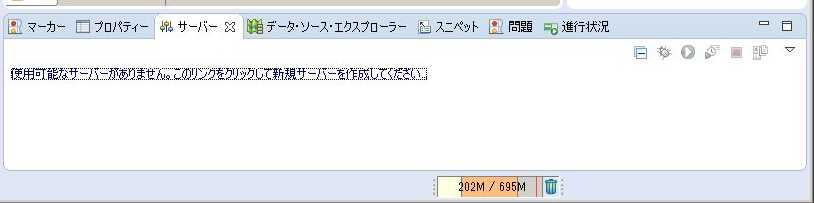「使用可能なサーバーがありません・・・」をクリックして、「新規サーバー」ダイアログを表示させます。
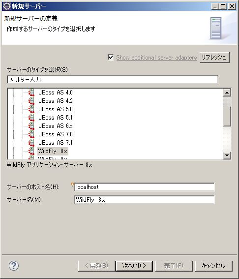以下の値を選択し、「次へ(N)>」ボタンを押下します。
名前 設定する値もしくは文字列 サーバーのタイプを選択(S): WildFly 9.x サーバーのホスト名(H): localhost サーバー名(M): WildFly-9.0.2.Final 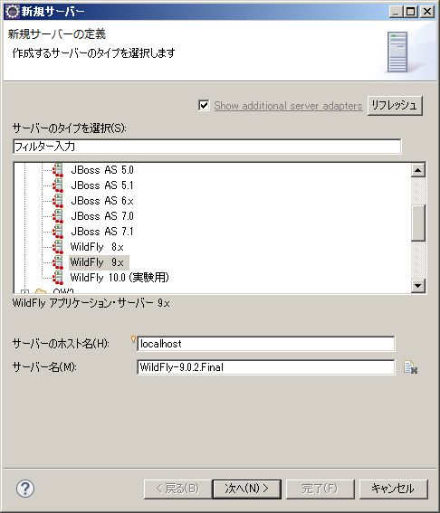「新規 JBoss サーバーを作成します」画面が表示されます。何も変更せず「次へ(N)>」ボタンを押下します。
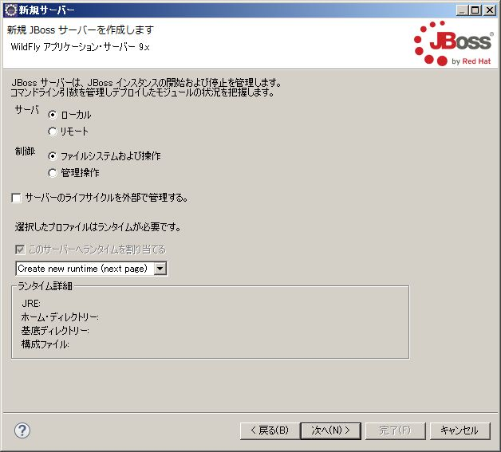「JBoss ランタイム」画面が表示されます。以下の値を設定します。
名前 設定する値もしくは文字列 名前 WildFly-9.0.2.Final ホーム・ディレクトリー C:toolwildfly-9.0.2.Final ランタイム JRE 「実行環境」「JavaSE-1.8」 サーバー･ベース・ディレクトリー standalone 構成ファイル standalone.xml 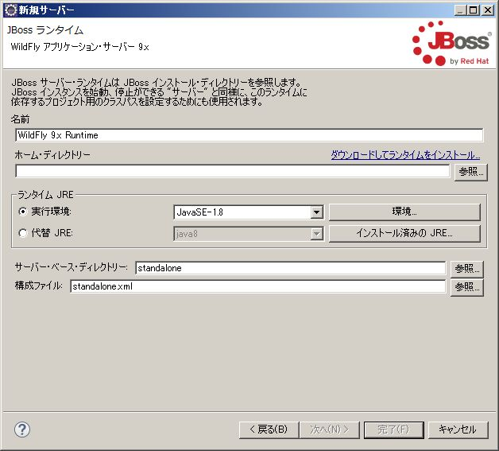「追加および除去」画面が表示されます。「完了(F)」ボタンを押下します。
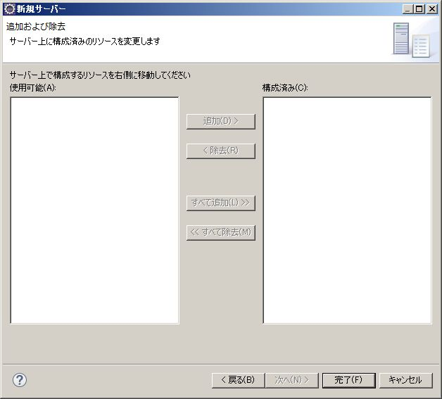「サーバー」タブに「WildFly-9.0.2.Final」が追加されます。
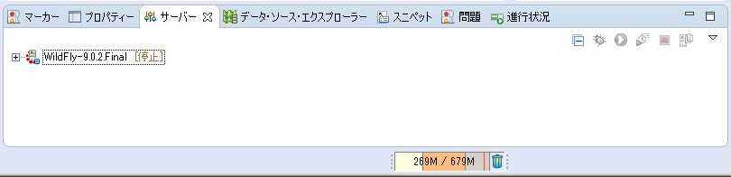「WildFly-9.0.2.Final」を右クリックして「開始」を選択します。
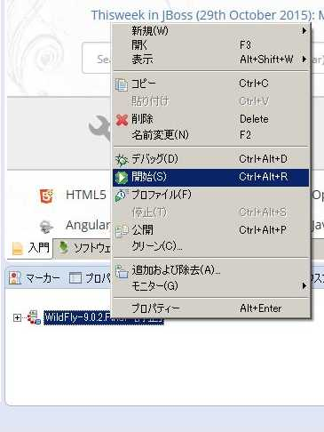「コンソール」タブで起動を確認します。
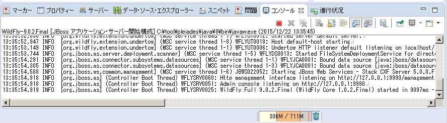コンソールタブの上部にある赤い四角形のボタンを押下して停止します。
{kind=link}
{kind=link}
{kind=link}
{kind=link}
{kind=link}
{kind=link}
{kind=link}
{kind=link}
{kind=link}
2.8. Eclipse 上での PostgreSQL データ・ソース・エクスプローラー登録¶
Eclipse から PostgreSQL のデータを確認するために登録を行います。
C:\tool\pleiades\eclipse 内の eclipse.exe を起動します。
下のタブにある「データ・ソース・エクスプローラー」を選択します。
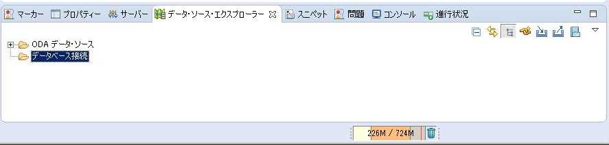「データベース接続」を右クリックし、「新規(N)...」を選択します。
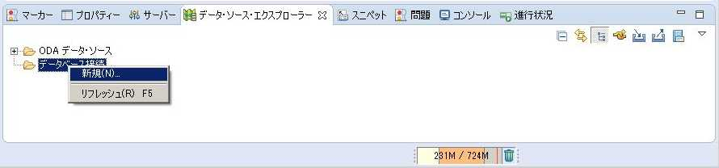「新規接続プロファイル」画面で以下の値を設定し、「次へ(N)>」ボタンを押下します。
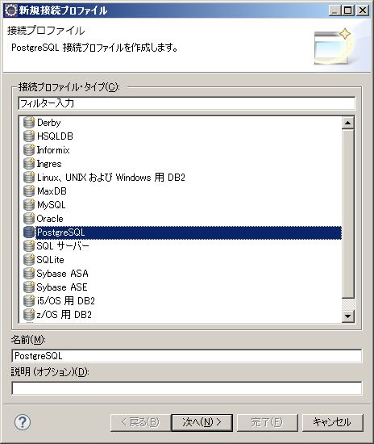名前 設定する値もしくは文字列 接続プロファイル・タイプ(C) PostgreSQL 名前(M) PostgreSQL 説明(オプション) (空欄) 「ドライバーおよび接続の詳細の指定」画面で「新規ドライバー定義」ボタンを押下します。
「ドライバー・テンプレートおよび定義名の指定」画面で「名前/タイプ」タブの「PostgreSQL JDBC ドライバー」を選択します。
「Jar リスト」タブを選択し、「postgresql-8.1-404.jdbc2.jar」を選択し「JAR/Zip の除去(R)」ボタンを押下して削除します。
- 「Jar リスト」タブで一番上の「JAR/Zip の追加(A)」ボタンを押下し「ファイルの選択」ダイアログを表示します。“C:\tool\postgresql-9.4-1206-jdbc41.jar” を選択し「開く(O)」を押下します。
「Jar リスト」タブに JDBC ドライバが表示されます。
「プロパティー」タブで以下の値を設定し、「OK」ボタンを押下します。
プロパティー 設定文字列 データベース名 shainweb パスワード PostgreSQL インストール時に設定したパスワード ユーザー ID postgres 接続 URL jdbc:postgresql://localhost:5432/shainweb 値が設定された画面が表示されます。「パスワードの保管(V)」にチェックを入れます。
右下にある「接続のテスト(T)」ボタンを押下し、成功することを確認し、「次へ(N)>」ボタンを押下します。
「要約」画面が表示されます。「完了(F)」ボタンを押下します。
「データ・ソース・エクスプローラー」タブで接続が追加されていることを確認します。
{kind=link}
{kind=link}
{kind=link}
{kind=link}
{kind=link}
{kind=link}
{kind=link}
{kind=link}
{kind=link}
{kind=link}
{kind=link}
{kind=link}